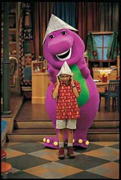

The first 10 new Barney
& Friends episodes premiered September 2 - 13. The next 10
episodes will premiere on successive Fridays throughout September,
October and November. New episodes will feature a variety of themes
and will air on the following dates:
September
2 - All Aboard
September 3 - Up, Down and Around
September 4 - Tea-riffic Manners
September 5 - Puppy Love
September 6 - Bunches of Boxes
September 9 - Stop! Go!
September 10 - Red, Yellow and Blue
September 11 - Play For Exercise
September 12 - Come Blow Your Horn
September 13 - A New Friend
September 20 - Numbers! Numbers!
September 27 - This Way In! This Way Out!
October 4 - Spring Into Fun
October 11 - Play It Safe
October 18 - Three Lines, Three Corners
October 25 - A Parade of Bikes
November 1 - It's A Happy Day
November 8 - My Family and Me
November 15 - Splish! Splash!
November 22 - BJ's Really Cool House
PBS #701: All Aboard!
Barney's friends are racing to clean up the park, but Kami has trouble
keeping up with the other kids - even when they pretend to be ants
marching in a parade! Barney and Scott visit the Idea Bench where
Scott comes up with a great idea - to show Kami that even though the
caboose is the last car in the train, it's the most important because
that's where the conductor rides. With Kami playing "Conductor
for the Day," they learn all about trains and have fun checking
out a model train. Then, they work together to clean up the old caboose
in the park as they sing "I've Been Working On the Railroad."
When Barney tells them how railroad signal flags are used, the children
make their own flags and wave them around the park. Barney's friends
learn that from the first to the last in line, everyone is special.
Related Activities:
#701
Related Lesson Plan: #701
PBS
#702: Up, Down and Around!
Tony wants to show off his handmade kite - but it doesn't have a string,
so the kite isn't ready to fly. When an unexpected breeze blows it
high in the treetops, Barney and the kids discuss the ups and downs
of getting the kite out of the tree. The kids discover more about
what's up and what's down in the world all around them as they sing
"Up Is Up and Down Is Down." Playing fun games like London
Bridge and I Spy also helps the kids discover more about up, down
and all around. Finally, with a great idea from Tony and a little
inspiration from Baby Bop, the "The Baby Bop Hop" brings
the kite tumbling down from the treetop. Every day can have its ups
and downs, but thanks to Barney and his friends, every day can be
all around fun for everyone!
Related Activities:
#702
Related Lesson Plan: #702
PBS #703: Tea-riffic Manners!
Tea time is the perfect time to practice good manners. Gianna invites
two special guests - Baby Bop and BJ! When they find the decorations
they need in the caboose, the flowers make Baby Bop sneeze, and they
all sing "Keep Your Sneeze To Yourself" so Baby Bop can
learn the right way to sneeze. After the friends dress up like high
society, it's time for tea. Baby Bop learns that the magic words "Please"
and "Thank You" are the correct words to use when asking
for more cookies. And singing "Clean Up! Do Our Share" makes
cleaning up good manners and good, clean fun. Barney puts on a humorous
presentation about bad manners with a story about some messy kids
named "The Floodledoops." The silliness continues as they
sing "Silly Sounds." Reminding his friends about good manners
while having fun is definitely proper etiquette for their purple pal.
Related Activities:
#703
Related Lesson Plan: #703
PBS #704: Puppy Love!
Barney's having a "dog gone" good time. Bingo needs to go
to the veterinarian, but he's hiding in the tool shed. The kids help
Mr. Boyd search for Bingo, singing, "Where, Oh Where Has My Little
Dog Gone?" Barney invites the TV audience to join in the search
for Bingo. When BJ hears Bingo is going to the vet, he and the kids
pretend they're going to the doctor too. Then BJ is back to his search
for buried treasure - his missing baseball, which he suspects was
buried by Bingo. Ms. Duffy introduces the kids to her guide dog, Kellie,
and teaches them more about guide dogs. While getting ready for his
baseball game, BJ has an unusual audience - Mr. Steele and his four
Chihuahuas. Young children will enjoy playing like man's best friend
as they sing "Leg Over Leg" and explore a variety of dogs
on Barney's computer. They'll learn that taking care of pets is a
nice way to show you love them!
Related Activities:
#704
Related Lesson Plan: #704
PBS #705: Bunches of Boxes!
When the Enjoy-Your-Toys Company delivers a bunch of boxes, Barney's
friends are excited. Expecting new toys, they're surprised to find
empty boxes. With a little encouragement from Barney and a lot of
imagination, Scott turns a shoebox into a turtle, and Kami finds the
time to turn a box into a grandfather clock. Whitney and Mario set
sail in their cardboard ship, and Scott and Kami go for a drive in
their "box cars." When Kami and Mario build a cardboard
castle, the stage is set for fairy tale time with Barney. Then, a
packing box becomes home to a pachyderm as the kids join BJ for circus
fun. Finally, Barney's marching band makes beautiful music from a
bunch of boxes. Children will use their imaginations as they are engaged
in crafts, games and fantasy play, and they'll love singing fun songs
like "The Elephant Song" and "Little Turtle."
Related Activities:
#705
Related Lesson Plan: #705
PBS #706: Stop! Go!
While Angela enjoys playing traffic cop in the park with her STOP
and GO signs, Baby Bop gets a quick lesson in opposites - up/down,
stop/go, in/out, and high/low. When Officer Phillips visits the park,
Baby Bop signals her when to stop and go. Next, Bingo is the perfect
playmate for Baby Bop's Stop & Go game. Barney and the
kids enjoy a day of non-stop fun with a costume parade, a game of
musical Stop & Go, and a display of some very vigorous
body movements as they sing "Move Your Body." The fun doesn't
stop when they slow their bodies down. Barney reads a playful version
of "The Three Billy Goats" as the kids act out a fantasy
version on the bridge. Finally, it's time to stop the activity and
go home after a long day of non-stop fun!
Related Activities:
#706
Related Lesson Plan: #706
PBS #707: Red, Yellow and Blue!
Sarah leaves a colorful trail of footprints to guide Mario to their
Caboose Color Collection. Strangely enough, Mario's flying pig fits
into the red collection perfectly as the kids sing the fun song, "The
Flying Pig." But how does a haystack fit into the blue collection?
And where will they find more yellow objects for the yellow collection?
Miss Jo paints a yellow flower, and Sarah makes yellow flowers out
of crepe paper. Baby Bop contributes her yellow blankey, which leads
to a search for a substitute blankey - but red and blue blankeys are
just not the same as her
favorite yellow one. When Barney makes the yellow flowers magically
grow, Baby Bop is delighted to get her yellow blankey back. The day
is a celebration of primary colors but, like all days with Barney,
it's primarily fun!
Related Activities:
#707
Related Lesson Plan: #707
PBS #708: Play for Exercise!
Whitney, Beth and Scott enjoy playing catch with the ball, as well
as leapfrog, but they're surprised to learn from Barney that they
are exercising while they play. Soon more children join them for a
game of jump rope. Baby Bop loves dancing and skipping - and thinks
she will like hang gliding when she grows up, and BJ loves basketball.
But everyone loves giggling and wiggling as they sing "The Giggle,
Gaggle, Wiggle Dance." A rain shower moves the fun and games
indoors, and the kids learn that you can have fun while you exercise
indoors as well. Barney invites the TV viewers to run in place with
him and reminds everyone of the importance of stretching. When BJ's
stomach growls, Barney uses snack time as a good time to learn about
eating healthy foods. Good food, good exercise and good friends like
Barney make every day a healthy one!
Related Activities:
#708
Related Lesson Plan: #708
PBS #709: Come Blow Your Horn!
Everyone is excited about the evening concert with Mr. Boyd's brass
band. Angela is learning to play the trumpet but needs a lot of practice
before she can join the band, and BJ hopes to drum up a gig with the
band. In the meantime, the kids view Mr. Boyd's collection of horns
on display in the caboose. As they learn about French horns, trumpets,
trombones and tubas, Barney admits that he has tooted a tuba tune
a time or two in his time and breaks into a fun tuba instrumental.
When the kids offer to help Mr. Boyd decorate, they find themselves
searching for missing band posters - which leads to nursery rhyme
fun with "Little Boy Blue" and "Old King Cole."
As the band practices, Barney - the Grand Poobah of the tuba - and
drummer BJ get to play along. Making music with friends is always
fun with a musical purple dinosaur!
Related Activities:
#709
Related Lesson Plan: #709
PBS #710: A New Friend!
It's always fun to make new friends, but it's not always easy to be
the "new kid." When Mr. Boyd's niece, Colleen, visits the
park, Barney guides the kids through a series of fun activities to
help Colleen go from being a "new kid" to a "new friend."
As Barney sings "I Put A Smile On" and "Misty Moisty
Morning Manners," the kids learn how to smile and say hello to
new friends. As the kids share their favorite things to do, they find
that like "The Lion and the Mouse," friends don't always
have everything in common. Scott, Kami and Mario take turns showing
their new friend their favorite places in the park. Even though Colleen
must leave with her parents, everyone is excited to have her as a
new pen pal. Barney reminds them that whether friends are near or
far, friendships can reach around the world.
Related Activities:
#710
Related Lesson Plan: #710
PBS #711: Numbers! Numbers!
After a fun game of Hide & Seek, Tony shows off a box full of
numbers that he and his dad made for the school bulletin board. When
a gust of wind blows them away, Barney and his friends go on a number
hunt all over the park and eventually find all of the numbers in sequential
order. Looking inside the caboose, they discover that numbers are
everywhere they look. Adding a little fun to the number hunt, they
play Number Limbo and Six Shake Pudding. Barney leads the group in
several musical numbers as they sing "One, Two, Buckle My Shoe,"
"There Are Seven Days In A Week," and Baby Bop's favorite,
"Look At Me, I'm Three." With only two numbers to go, Barney
invites the viewers to help him find numbers 9 and 10. You can always
count on Barney for fun!
Related Activities:
#711
Related Lesson Plan: #711
PBS #712: This Way In, This Way Out!
Angela visits the park to set Terry, her box turtle, free after observing
him with her classmates in school. Barney, Nick and Sarah are delighted
to see Terry come out of his shell, which leads to a discussion about
the meanings of "in" and "out." BJ, who's out
on a nature walk, joins them as they mimic the animals in the song
"Over In the Meadow." Baby Bop discovers a leaf with a caterpillar
in a cocoon and decides to keep it in Terry's old box. She searches
the caboose for things to put in the box to make the caterpillar more
comfy but can't find anything until Barney suggests her yellow blankey
to keep the caterpillar nice and warm. She discovers more "ins"
and "outs," including some Russian nesting dolls. Finally,
Baby Bop watches her little butterfly fly away. Whether in or out,
every day is special with Barney!
Related Activities:
#712
Related Lesson Plan: #712
PBS #713: Spring Into Fun!
Spring showers bring more than flowers; they bring out the creativity
in Barney's friends. While it's raining outdoors, the kids paint birds,
butterflies and caterpillars indoors. Then Barney displays the changing
seasons on his computer. Grabbing their umbrellas and singing, "Rain,
Rain, Go Away," puts an end to the spring rain and a beginning
to the sunshine and a rainbow. The kids are ready for a spring fling
and have fun blowing bubbles and enjoying nature. Beth can't decide
what she likes best about spring, but she definitely doesn't like
the sneezing it brings. The kids join Barney for a picnic, including
some unexpected ant helpers who clean up as the group sings "The
Ants Go Marching." Beth decides her favorite part of spring is
the birth of baby birds and animals in the spring season. It's always
the right season to learn and grow with Barney.
Related Activities:
#713
Related Lesson Plan: #713
PBS #714: Play It Safe!
Baby Bop wants to play nurse to BJ and put bandages all over him,
but BJ is not injured. It does, however, provide the perfect opportunity
for Barney to remind the group that bandages are for real boo-boos
and to review safety rules for playgrounds and parks. As the song
says, "Saying Be Careful Means I Love You." There are rules
to remember when playing ball, swinging, sliding and climbing. While
putting on a puppet show, the kids find that Mother Goose rhyme characters,
such as Humpty Dumpty and Jack & Jill, weren't always careful
enough. Baby Bop continues to eagerly await a real boo-boo so she
can play nurse, and a rambunctious BJ isn't very careful about being
careful. When BJ trips over a toy, Baby Bop finally gets to bandage
a real boo-boo. Accidents may happen, but when they do, a little love
from Barney is just what the doctor ordered.
Related Activities:
#714
Related Lesson Plan: #714
PBS #715 Three Lines, Three Corners
Barney's friends are playing hopscotch - but with a twist! It's Triangle
Hopscotch because Whitney is learning about triangles in school. When
Mario arrives in his new hiking boots, he explains that he's going
on a camping trip. While talking about the adventures they can have
outdoors, Barney encourages them to look around for triangles - on
the playset roof, the caboose door, and the toy sailboat. The Tee-rrific
Triangle Detective Team sings "The Wonderful World of Shapes"
as they search for triangles and make fun crafts from triangular shapes
- from butterflies to fish to jack-o-lanterns. When Mario makes a
triangular adventure hat, Barney takes them on an imaginary camping
trip. And there's nothing like triangular S'mores to start the trip
off right, as they continue to discover triangles in the world around
them. With Barney, it's always fun to learn new things!
Related Activities:
#715
Related Lesson Plan: #715
PBS #716 A Parade of Bikes!
Kami and Sarah are preparing for a bike parade. When Nick arrives,
they find he's had an accident on his bike. Barney and the girls cheer
Nick up, while Mr. Boyd offers to fix his bike. Baby Bop rides up
on her tricycle and proudly shows off her riding skills as she sings,
"By Myself." Barney reminds them that whether you have one,
two, three, or four wheels, riding bicycles and tricycles is good
exercise. They soon discover there are lots of things with wheels
- from unicycles to rickshaws to bicycles built for two. Nick is impressed
with professional bike racers, which leads to a discussion with Mr.
Boyd about bicycle safety. Baby Bop helps decorate the bikes for the
parade, and they begin by making license plates. When Nick's bike
is fixed and Barney adds the finishing touch with balloons - the parade
is ready to roll!
Related Activities:
#716
Related Lesson Plan: #716
PBS #717 It's A Happy Day
It's an extra special day when Beth invents a new holiday called "Happy
Day." The kids can make a wish for something that will make them
happy - and the others try to make the wish come true. Barney and
the kids discuss faces and feelings and the ways people show they're
happy - by laughing or hugging. Dogs wag their tails, and cats show
they're happy when they purr, which leads to singing "Three Little
Kittens." When the kids pretend to be robots, they discover that
sad feelings are better than no feelings at all. BJ's wish to take
a fishing trip changes when Beth has an unexpected accident that makes
her "Happy Day" a sad one. When BJ throws a surprise party
for Beth, everyone is happy. Barney reminds the kids that the best
happiness of all is doing things for others.
Related Activities:
#717
Related Lesson Plan: #717
PBS #718 My Family and Me!
Nick, Whitney and Gianna are invited to a picnic, but they don't know
who invited them. They're instructed to bring a family treasure, so
Nick shows them a toy truck that belonged to his father. Whitney's
treasure is a bracelet her grandmother gave her, and Gianna's treasures
are teddy bears - which leads to singing "Teddy Bear Picnic."
Mario's family treasure is a book given to him by his brother. As
the children discuss types of families, they learn that families might
even include pet dogs! Barney explains that no matter the size, families
are people who love one another. Arriving at the picnic, they discover
that Barney sent their invitations and that he has a special surprise;
it's a family picnic, and their families were invited too! When asked
why his family didn't come, Barney responds that his friends are his
family.
Related Activities:
#718
Related Lesson Plan: #718
PBS #719 Splish! Splash!
A "too hot" afternoon becomes a "totally cool"
day when Barney introduces his friends to the wonderful world of water.
A cool drink at a water fountain leads to a discussion that water
is everywhere around them. Water is important for drinking and bathing,
and it's fun for playing in - as Captain BJ proves with the help of
his toy boat. Droopy flowers in the park get water from the kids,
and hot kids get nice cool lemonade from Angela. As they listen to
the watery sounds of an aquarium, they sing "The Fishing Song"
and "If I Lived Under the Sea." The ultimate way to experience
water is to get into the swim of things with a real swimming pool
- which makes a big splash with the kids and is a good opportunity
to review swimming safety rules. Water is everywhere, and fun is anywhere
with Barney!
Related Activities:
#719
Related Lesson Plan: #719
PBS #720 BJ's Really Cool House
The park is a home away from home for Barney and his friends, but
BJ wants to build his very own "totally awesome, completely cool"
house. While BJ works on his house, Barney teaches the kids about
houses and homes through songs such as "That's A Home To Me"
and by using his laptop computer to show them a variety of homes from
around the world. Following is an impromptu show about fanciful nursery
rhyme homes. When a picture puzzle of rooms in a house triggers a
series of make-believe activities, a toy kitchen yields yummy macaroni
and cheese, and a bubbling bathtub is the right place for Baby Bop's
bath. BJ thinks his house is finished but discovers he's forgotten
something and needs to make room for someone he loves - Baby Bop!
Barney reminds them that a family and loving friends make a house
a home.
Related Activities:
#720
Related Lesson Plan: #720